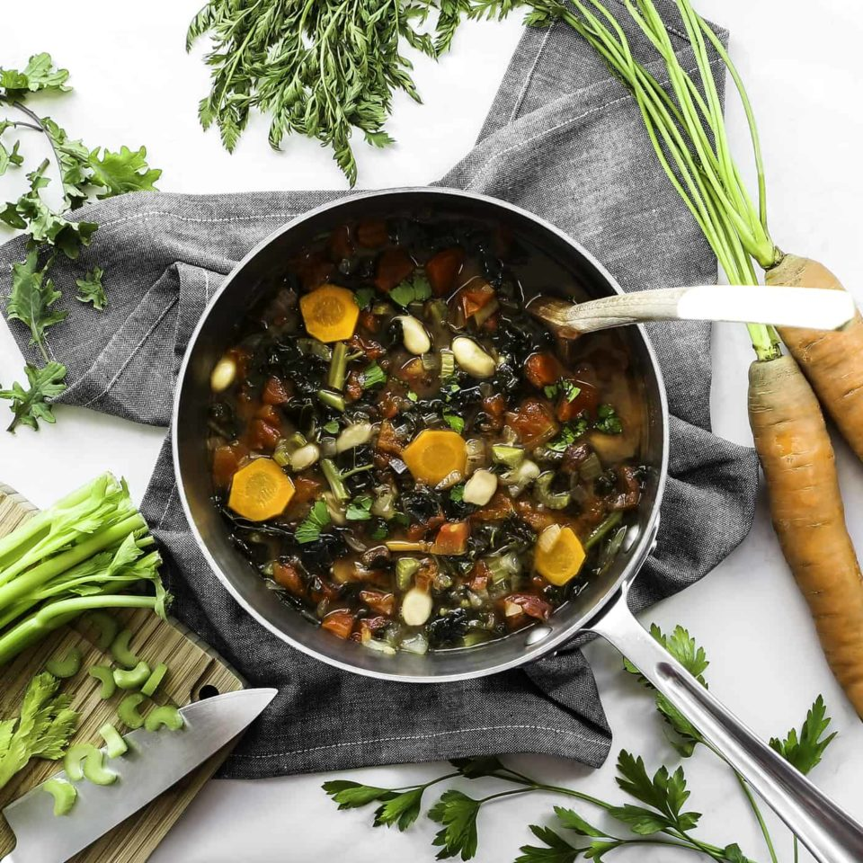

Tuscan Bean Soup

Known as robollita in italian, this soup
is a mainstay of Tuscan cuisine.
Tuscan Bean Soup is a hearty, rustic dish made with a mixture
of white beans, vegetables, and herbs simmered in a flavorful tomato broth.
Serve with croutons for a filling and comforting meal.
Ingredients
- 1/4 cup olive oil
- 1 cup sliced carrots
- 1 cup sliced celery
- 1 cup diced yellow onion
- 1/2 cup coarsely chopped Italian parsley
- 1 tablespoon minced garlic
- Salt and freshly ground black peper
- 1 can diced (28 onces) Italian plum tomatoes with juice.
- 10 ounce kale
- 2 cup chicken broth
- 3 cup cooked white beans
- extra-virgin olive oil
- croutons
- shaved parmesan cheese
Steps:
- Heat the olive oil in a large pot over medium-high heat
- When the oil is hot, add the carrots, celery, onion, parsley and garlic.
- Cook, stirring frequently, until the vegetables have softened and
begun to brown lightly, about 15 minutes.
- Season with salt and pepper to taste.
- Add the tomatoes, kale, chicken broth and 8 cups of water to the pot.
- Raise the heat to high and bring the soup to a boil.
- Reduce heat, cover the pot, and cook at a simmer for 5 minutes.
- Add 2 cups of the beans to the pot and cook, covered, until warmed through.
- Meanwhile, place the remaining cup of beans in a food processor
and puree with 1/4 cup of warm water.
- Add the puree to the soup and season with salt and pepper to taste.
- Serve warm with croutons and shaved parmesan.